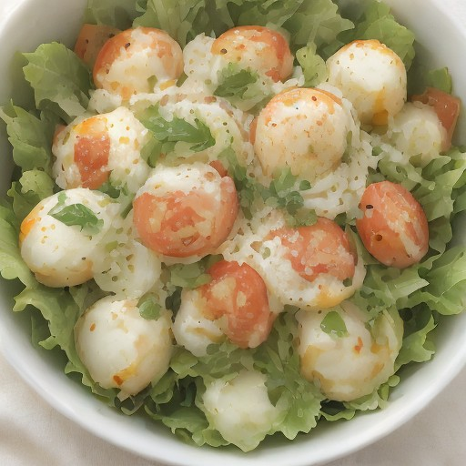

サイド
トマトとモッツァレラの悪魔的甘酸っぱさ！ - 意外な組み合わせのチーズケーキ風サラダ

完熟トマトの酸味がモッツァレラのクリーミーな風味と、意外な組み合わせで、まるでチーズケーキの様な味わいが楽しめる、特別なサラダレシピ。
💡 こんな時・こんな人におすすめ！
parties, picnics, BBQ, summer evenings, anytime you want a unique salad experience
📋 必要な材料（ポストイット風）
材料リスト 1
- 完熟トマト1個
- モッツァレラチーズ100g
- オリーブオイル大さじ2
材料リスト 2
- レモン汁小さじ1
- バジルお好みで
🍳 作り方ステップ
1
1. トマトは、薄切りにして、レモン汁とバジルを混ぜて、オリーブオイルで和えます。
2
2. モッツァレラチーズをカットして、トマトと一緒にサラダボウルに盛り付けます。
3
3. トマトとモッツァレラチーズのバランスを調整して、好みの味に仕上げます。
4
4. お好みで、ハーブやスパイスで風味をプラスします。